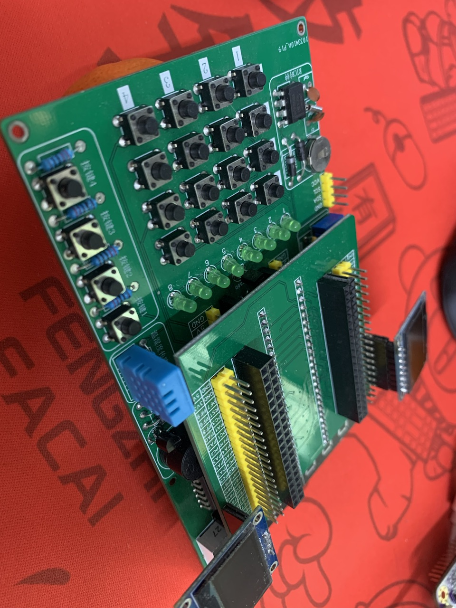
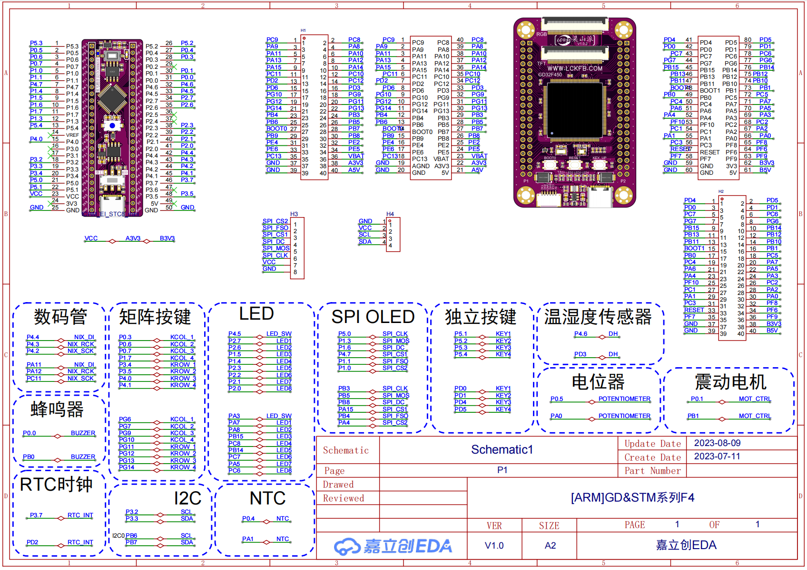
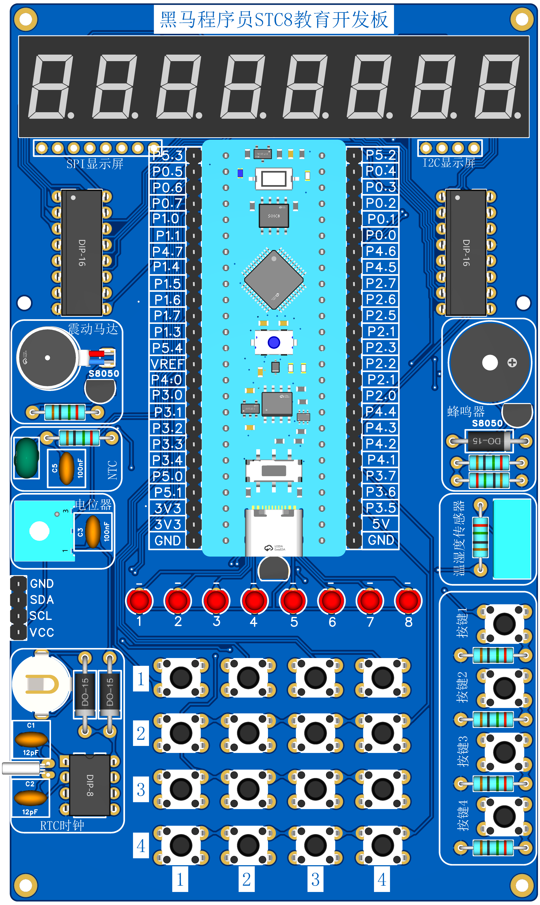

<!DOCTYPE lake>
<h2 data-lake-id="Wrckg" id="Wrckg"><span data-lake-id="u539b0168" id="u539b0168">焊接示意图</span></h2><a class="yuque-card-link" href="https://cdn.nlark.com/yuque/0/2023/jpeg/27903758/1691804431815-11208a85-b058-4175-9ff2-2101faa8137b.jpeg" rel="noopener noreferrer" target="_blank">board：board</a><p data-lake-id="uda77144d" id="uda77144d"><span data-lake-id="ud9880789" id="ud9880789">按照以上图例标注进行焊接。</span></p><p data-lake-id="u8c78c875" id="u8c78c875"><span data-lake-id="ub87a436f" id="ub87a436f">注意严格遵守焊接方向。有丝印的面为正面。</span></p><blockquote class="lake-alert lake-alert-danger" data-lake-id="ud5ba1b7c" id="ud5ba1b7c"><p data-lake-id="u6d5cbebd" id="u6d5cbebd"><span data-lake-id="ufd7de0bf" id="ufd7de0bf">注意：</span></p><ol list="ud5a072a4"><li data-lake-id="u4e93d89f" fid="ue167c647" id="u4e93d89f"><span data-lake-id="u5d14edb2" id="u5d14edb2">先焊接最内侧的1x25的排针，注意方向</span><strong><span data-lake-id="uef37f73f" id="uef37f73f">朝下</span></strong></li><li data-lake-id="ub9d91614" fid="ue167c647" id="ub9d91614"><span data-lake-id="u473e3bd9" id="u473e3bd9">接着焊接两侧的2x20的排针，注意方向</span><strong><span data-lake-id="ue791c634" id="ue791c634">朝上</span></strong></li><li data-lake-id="u4f22436e" fid="ue167c647" id="u4f22436e"><span data-lake-id="ue8308b7d" id="ue8308b7d">最后焊接中间的2x20的排母，注意方向</span><strong><span data-lake-id="ue9d8109d" id="ue9d8109d">朝上</span></strong></li></ol></blockquote><p data-lake-id="ufe97313e" id="ufe97313e"><strong><span class="lake-fontsize-12" data-lake-id="udd0f23ed" id="udd0f23ed">如果不清楚焊接成什么样，先看盯着这张图看1分钟！：</span></strong></p><p data-lake-id="ud138dda0" id="ud138dda0"></p><h2 data-lake-id="kaJxE" id="kaJxE"><span data-lake-id="u4fc9c107" id="u4fc9c107">原理图</span></h2><a class="yuque-card-link" href="https://www.yuque.com/attachments/yuque/0/2023/pdf/27903758/1702521810886-2611670a-5aec-4070-af5a-720ef0bbed3e.pdf">localdoc：GD32扩展板转接板.pdf</a><p data-lake-id="uebc65348" id="uebc65348"></p><h2 data-lake-id="ZiI2S" id="ZiI2S"><span data-lake-id="ubb0cb3e9" id="ubb0cb3e9">作用</span></h2><p data-lake-id="uedbb5231" id="uedbb5231"><span data-lake-id="ue29bc566" id="ue29bc566">梁山派通过转接板来控制扩展板。</span></p><p data-lake-id="ucbd0dab4" id="ucbd0dab4"><span data-lake-id="uca05e896" id="uca05e896">​</span><br/></p><p data-lake-id="u0be0f920" id="u0be0f920"></p>